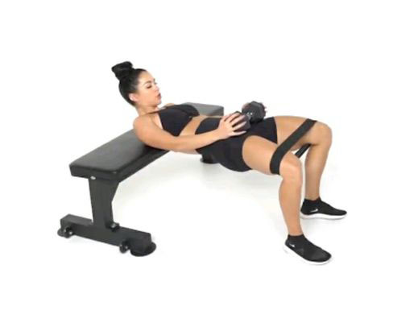

Hip Thrusts / Glute Bridge / Abduction

Recommended Equipment:
- Small fitness band (heavy or xtra heavy)
- Bench or plyometric box
- Barbell or dumbbell
- Padding or cushion for comfort (optional)
Instructions:
- Place the band around your lower thighs or above your knees
- Sit in front of your bench, feet hip-width apart, and place the weight (barbell or dumbbell) over your hips
- Option to place a cushion between the weight and yourself to protect your hip bones
- Keeping your head always parallel to the floor (eyes should always be looking straight ahead), lift your hips up high, squeezing your ass, keeping your knees above your ankles
- At the top, readjust your feet position if necessary - you should feel your butt-muscles squeezing most - quads and hamstrings should not be the main muscles working. If you feel it in your quads, step your feet further away from you; if your hamstrings are feeling it, step your feet closer towards you
- Once you feel stable, and your glutes are flexed, keep your hips up, and spread your knees. This should target the gluteus medius more
- Bring your knees back to above your ankles, and lower your hips slowly to hover above the ground.
- Engage your glutes and lift your hips again, at the top lower a couple inches and pulse right back up. (Totaling 2 thrusts)
- Hold at the top, engage your glutes, and perform two abductions. Try to keep these movements controlled, knees out then knees back in without momentum.
- Lower slowly
- Repeat with 3 thrusts, 3 abductions, then keep climbing until you can barely finish the abductions
- Rest. Walk around to shake out those muscles and to breathe
- Repeat 3-4 sets
Important things to note:
- Make sure your core is always tight - try to suck in your stomach. Do not let your back do the work!
- Keep your head still and parallel to the ground. Your eyes should always be looking straight ahead. At the top of your bridge, your chin should be tucked.
- Remember to breathe! Don't hold your breath
- Start with lower weights so that you have good form and can strengthn your glutes first. If you go too heavy, your quads or hamstrings or even back may start kicking in to do work to help lift those weights
- Try to control your movements, especially when lowering your hip thrusts.
- The most important thing is to activate that mind-muscle connection. Always be thinking about your glutes squeezing, and adjust your form or lower your resistance if you feel that the wrong muscle is being targeted
- Note: I've been working on these for almost a year. I usually use 45lbs-60lbs total with each set, and can only get up to 6 reps.